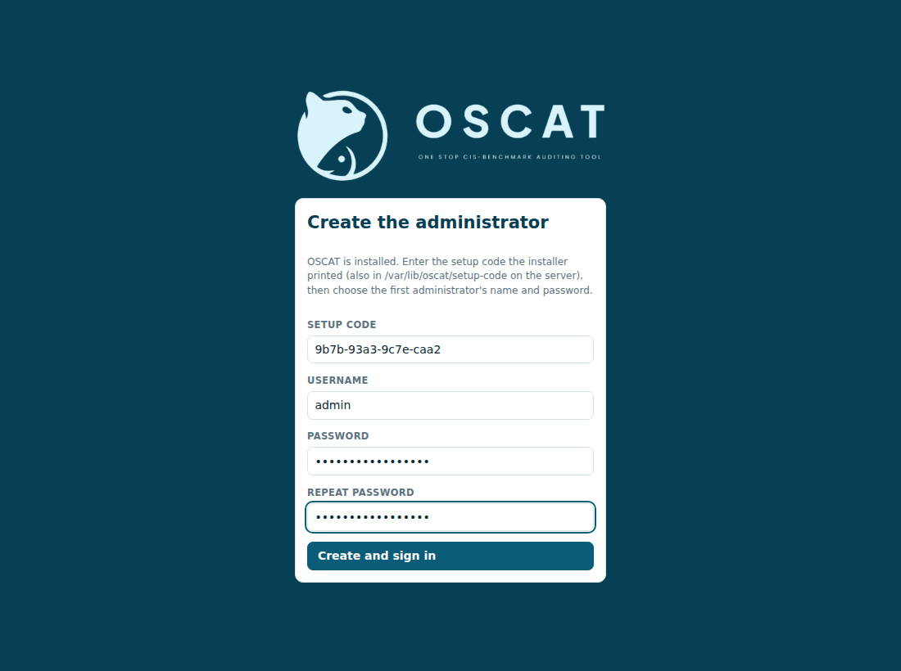
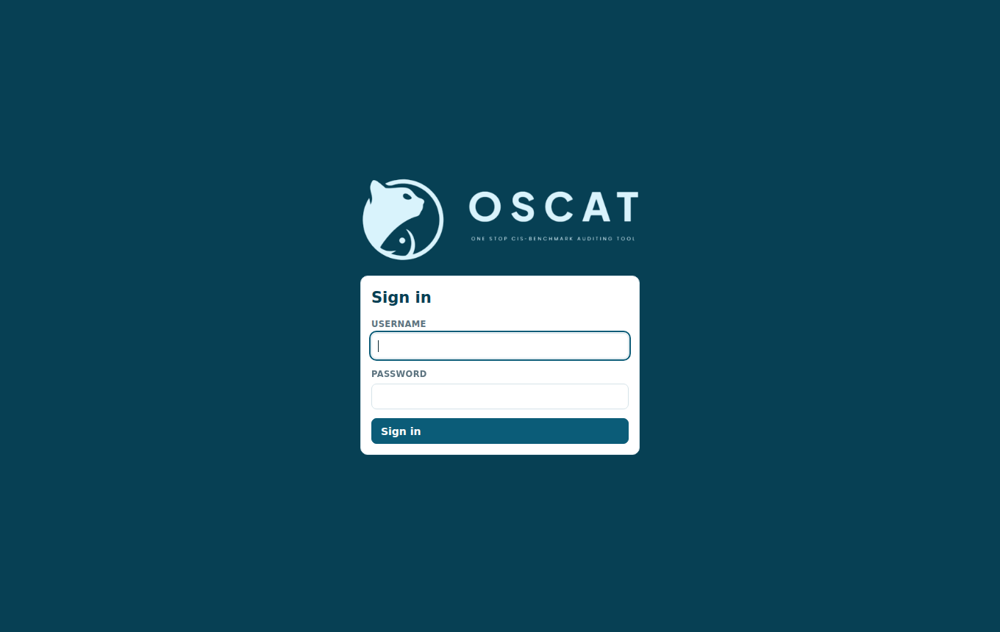

First run and administration
Create the first administrator
After installing, open https://<jumphost>:8443 in a browser. The certificate is self-signed, so the browser warns once; accept it (or install your own certificate, below).
The login page asks for the setup code the installer printed, and the first administrator's name and password (12 characters or more). The code works once. If you missed it, it is in:
| Install | Setup code file |
|---|---|
.rpm / .deb |
/var/lib/oscat/setup-code |
Docker .run |
cd /opt/oscat-docker && docker compose exec api cat /var/lib/oscat/setup-code |
| Windows | C:\ProgramData\OSCAT\setup-code |

After that, the page is a normal sign-in page.

The first steps
- Credentials: add the SSH, WinRM or APIC accounts OSCAT logs in with (Credentials and targets).
- Targets: add the hosts, pick their connection and credential, and put them in groups.
- Benchmarks: upload a benchmark, or import a CIS benchmark PDF on the Imports page (Profiles, Importing a CIS benchmark PDF).
- Scans: pick a benchmark and targets or groups, run the scan, and download the reports (Running scans, Reports).
Users and roles
Administrators add users on the Users page, or on the server with
oscat-server create-user <name> --role <role> (it prompts for the password).
| Role | Can |
|---|---|
admin |
everything, plus users, credentials, deleting scans and the audit log |
auditor |
targets, groups, profiles, PDF imports, collectors and scans; can pick credentials but not see or change them |
viewer |
read scans, results and reports |
Sign-in sessions last 12 hours. Every change (sign-ins, credentials, targets, scans, imports, collectors) is recorded on the Audit log page with the user, time and source address.
Settings
Settings live in an environment file read by the service:
| Install | File | Apply with |
|---|---|---|
.rpm / .deb |
/etc/oscat/oscat.env |
sudo systemctl restart oscat |
Docker .run |
/opt/oscat-docker/.env |
docker compose up -d in /opt/oscat-docker |
| Windows | C:\ProgramData\OSCAT\oscat.env |
Restart-Service OSCAT |
| Setting | Installer default | Meaning |
|---|---|---|
OSCAT_LISTEN |
0.0.0.0 |
address the web server listens on |
OSCAT_PORT |
8443 |
HTTPS port |
OSCAT_TLS_CERT, OSCAT_TLS_KEY |
self-signed files in /etc/oscat/tls/ |
HTTPS certificate and key |
OSCAT_MAX_PARALLEL_HOSTS |
50 |
hosts scanned at the same time |
OSCAT_LOGIN_REFUSAL_LIMIT |
3 |
stop starting new logins in a scan after this many hosts in a row refuse the login (0 = never stop) |
OSCAT_CA_BUNDLE |
system store | CA bundle for WinRM and APIC HTTPS certificates |
OSCAT_IMPORT_LLM |
none |
local AI model for PDF import: none or ollama |
OSCAT_IMPORT_MODEL |
model name, e.g. qwen2.5:7b |
|
OSCAT_OLLAMA_URL |
http://127.0.0.1:11434 |
where Ollama listens |
OSCAT_IMPORT_TIMEOUT_MINUTES |
30 |
a PDF import stops if reading the PDF takes longer |
OSCAT_IMPORT_MEMORY_MB |
6144 |
a PDF import stops if reading the PDF needs more memory (Linux) |
OSCAT_MASTER_KEY_FILE |
/etc/oscat/master.key |
key that encrypts stored credentials |
Using your own certificate
Point OSCAT_TLS_CERT and OSCAT_TLS_KEY at a certificate and key from your CA (readable
by the oscat user) and restart. To make a new self-signed certificate that also covers
other names: sudo oscat-server gen-cert --force --name oscat.example.com --name 10.0.0.5.
Backup
Back up two things, separately:
- the master key (
/etc/oscat/master.key, orC:\ProgramData\OSCAT\master.key); - the data (
/var/lib/oscat,C:\ProgramData\OSCAT, or/opt/oscat-dockerfor the Docker installer).
Without the key, stored credentials cannot be decrypted. With the key and the data, they can, so never keep both in the same place.
Upgrade
Install the newer package, .run file or .exe the same way as the first time. Settings,
key and data are kept, and the service restarts.